노션, 이것만 알면
업무에 막힘이 없습니다
이 문서는 노션의 모든 기능을 다루지 않습니다. 우리 회사 노션에서 실제로 쓰이는 기능만 골라, 그 기능을 다룰 줄 알면 업무에 지장이 없도록 만든 기능 설명서입니다.
화면 캡처는 전부 실제 우리 회사 노션 화면입니다. 순서대로 읽으면서 본인 노션을 같이 띄워두고 따라 해 보세요.
노션 첫 화면
노션은 문서를 쓰는 도구이면서 동시에 표로 일을 관리하는 도구입니다. 워드처럼 글을 쓰고, 엑셀처럼 표로 정리하고, 그 둘이 서로 연결됩니다. 처음엔 이 세 가지만 기억하면 됩니다.
화면은 크게 3개 구역
| 구역 | 위치 | 하는 일 |
|---|---|---|
| 사이드바 | 왼쪽 | 모든 페이지로 이동하는 통로. 검색·알림도 여기 |
| 본문 | 가운데 | 실제로 글을 쓰고 읽는 곳 |
| 상단바 | 위쪽 | 공유 · 댓글 · 즐겨찾기 · 페이지 메뉴 |
사이드바 위쪽 — 이동과 알림
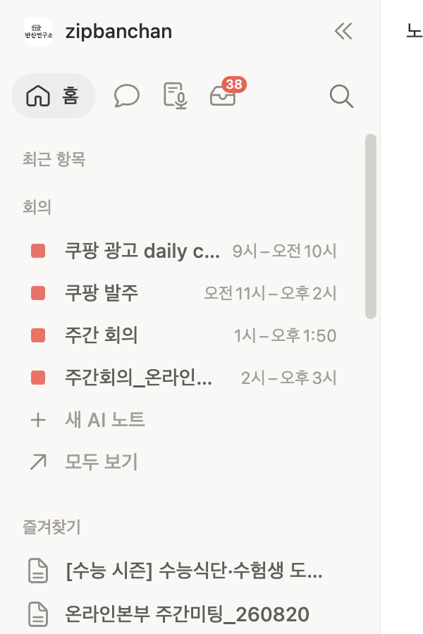
사이드바 아래쪽 — 문서가 사는 곳
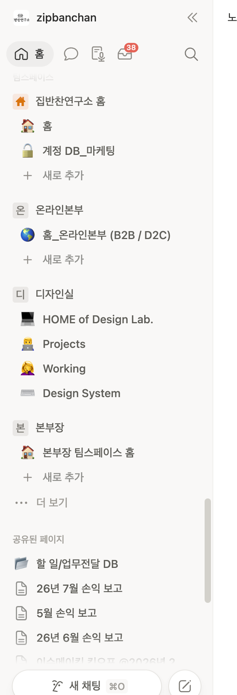
| 영역 | 누가 볼 수 있나 | 쓰임 |
|---|---|---|
| 즐겨찾기 | 나만 | 자주 여는 페이지를 위로 올려둔 바로가기. 실제 위치는 그대로 |
| 개인 페이지 | 나만 | 내 메모, 초안, 연습용. 다른 사람에게 보이지 않음 |
| 팀스페이스 | 그 팀 구성원 | 부서별 공용 공간. 우리 회사는 집반찬연구소 홈 · 온라인본부 · 디자인실 · 본부장 4개 |
| 공유된 페이지 | 초대받은 사람만 | 특정 인원에게만 개별 공유된 문서 |
| 휴지통 | 나 / 권한자 | 삭제한 페이지가 여기 남습니다. 되살릴 수 있음 |
권한이 없거나 아직 그 팀스페이스에 참여되지 않은 것입니다. 잘못된 게 아니니 팀장 또는 경영지원HQ에 요청하세요.
상단바 — 페이지 하나에 붙어 있는 버튼들
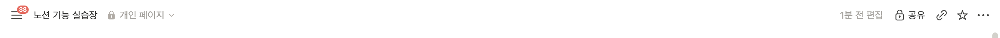
홈 화면
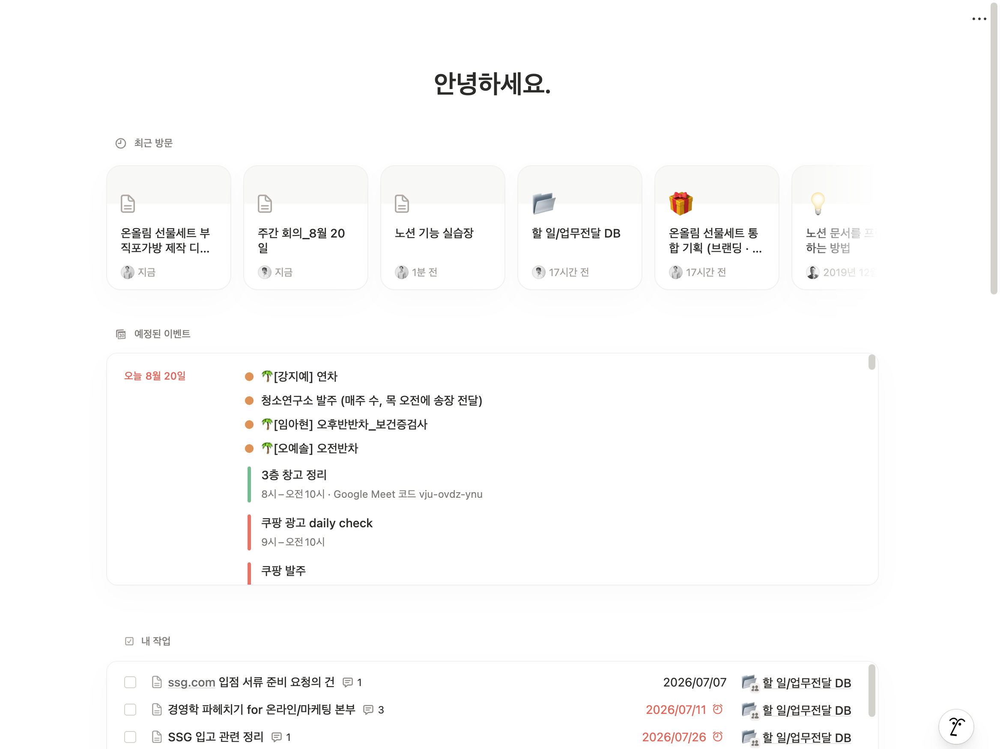
블록이라는 개념
노션에서 글을 쓸 때 가장 먼저 이해해야 하는 개념입니다. 워드는 한 장의 종이에 글을 쭉 쓰지만, 노션은 레고 블록을 하나씩 쌓아 문서를 만듭니다. 제목도 블록, 문단도 블록, 표도 블록, 이미지도 블록입니다.
블록을 다루는 손잡이
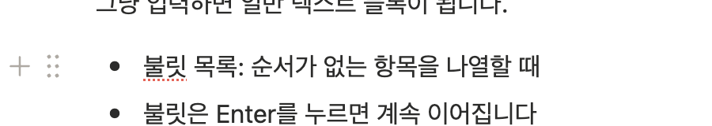
| 버튼 | 이름 | 하는 일 |
|---|---|---|
| + | 블록 추가 | 클릭하면 그 아래에 새 블록이 생기고 종류를 고를 수 있습니다 |
| ⠿ | 블록 손잡이 | 끌면 블록 위치를 옮기고, 누르면 블록 메뉴가 열립니다 |
블록 메뉴 — 지우기 · 복제 · 종류 바꾸기
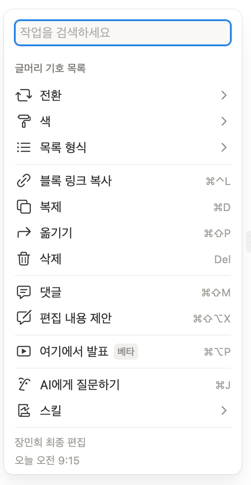
새 블록 만들기 — 슬래시 /
빈 줄에서 /를 입력하면 넣을 수 있는 블록 목록이 뜹니다. 이어서 이름을 입력해 좁힐 수 있습니다. 예를 들어 /콜아웃, /표, /구분선 처럼 씁니다.
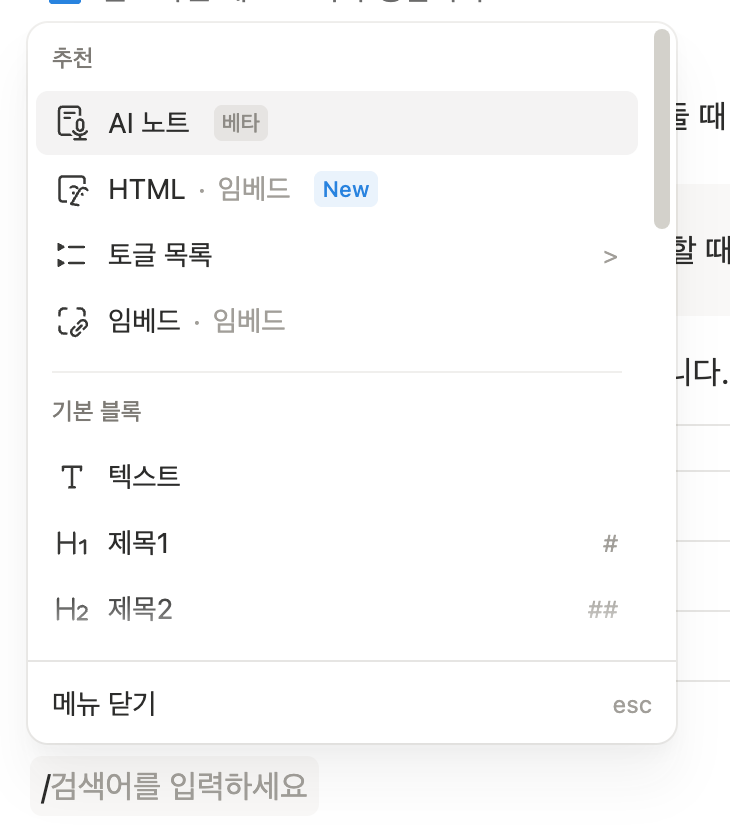
/ 하나만 외워두면 노션의 거의 모든 기능에 접근할 수 있습니다. 가장 중요한 단축키입니다.줄 바꿈과 들여쓰기
| 키 | 동작 |
|---|---|
| Enter | 새 블록을 만듭니다 (문단이 나뉩니다) |
| Shift + Enter | 같은 블록 안에서 줄만 바꿉니다 |
| Tab | 한 단계 들여쓰기 (하위 항목으로) |
| Shift + Tab | 내어쓰기 (상위 항목으로) |
| Backspace | 빈 블록에서 누르면 블록이 사라지고 윗줄과 합쳐집니다 |
목록을 쓰다가 Enter를 두 번 누르면 목록이 끝나고 일반 문단으로 돌아옵니다. 목록에서 못 빠져나와 당황하는 경우가 가장 흔한 첫 실수입니다.
자주 쓰는 블록 사전
블록 종류는 수십 가지지만, 실제 업무 문서에서 반복해서 쓰이는 것은 아래 열두 가지 정도입니다. 이것만 익히면 회사에서 보는 문서 대부분을 직접 만들 수 있습니다.
글의 뼈대 — 제목과 목록
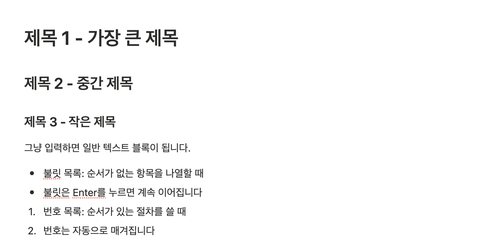
정리를 돕는 블록 — 체크박스 · 토글 · 콜아웃 · 인용 · 구분선
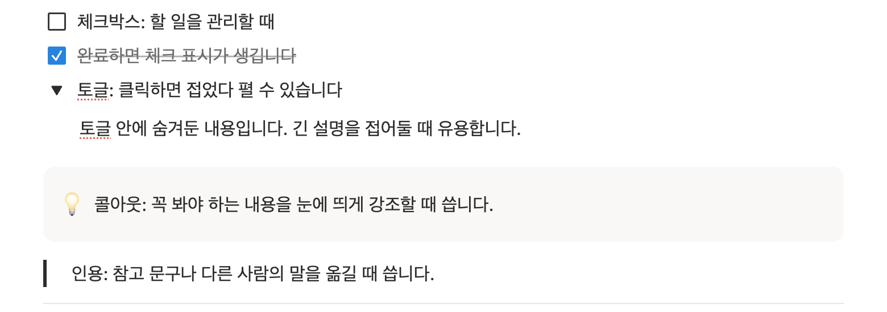
표
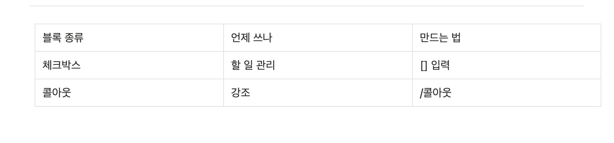
만드는 법 한눈에
| 블록 | 만드는 법 | 언제 쓰나 |
|---|---|---|
| 제목 1 / 2 / 3 | # / ## / ### | 문서의 장·절 구분 |
| 불릿 목록 | - 또는 * | 순서가 없는 나열 |
| 번호 목록 | 1. | 순서가 있는 절차 |
| 체크박스 | [] | 할 일, 확인 체크리스트 |
| 토글 | > | 긴 부연 설명을 접어둘 때 |
| 인용 | " | 참고 문구, 다른 사람의 말 |
| 콜아웃 | /콜아웃 | 꼭 봐야 하는 설명·주의사항 |
| 구분선 | /구분선 | 주제가 바뀌는 지점 |
| 표 | /표 | 비교, 항목별 정리 |
| 이미지 | /이미지 또는 파일 끌어놓기 | 화면 캡처, 사진 |
| 파일 첨부 | /파일 | 엑셀·PDF 같은 첨부물 |
| 목차 | /목차 | 긴 문서 맨 위에. 제목 블록을 읽어 자동 생성 |
| 페이지 링크 | /링크 또는 @ + 페이지 이름 | 다른 문서로 연결 |
글자 꾸미기
글자를 드래그해서 선택하면 서식 도구가 떠오릅니다.
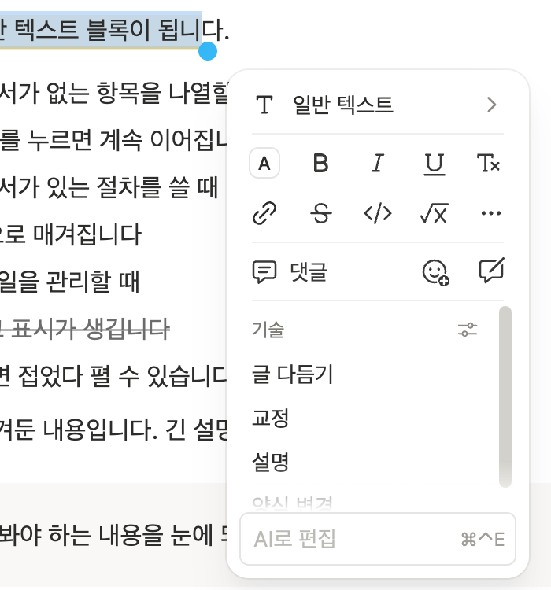
| 단축키 | 효과 |
|---|---|
| Ctrl + B | 굵게 |
| Ctrl + I | 기울임 |
| Ctrl + U | 밑줄 |
| Ctrl + K | 선택한 글자에 링크 걸기 |
| Ctrl + E | 인라인 코드 |
페이지 다루기
페이지는 문서 한 장입니다. 노션의 특징은 페이지 안에 페이지를 넣을 수 있다는 점입니다. 폴더와 파일의 구분이 없고, 페이지가 폴더 역할까지 합니다.
페이지를 만드는 세 가지 방법
/페이지 입력페이지 꾸미기
제목 위에 마우스를 올리면 아이콘 추가, 커버 추가가 나타납니다. 필수는 아니지만 아이콘을 달아두면 사이드바와 검색 결과에서 훨씬 빨리 찾을 수 있습니다.
페이지 메뉴 (…)
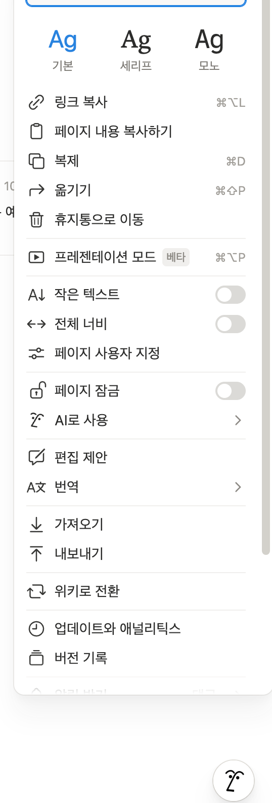
| 항목 | 설명 |
|---|---|
| 복제 | 똑같은 페이지를 하나 더 만듭니다. 남의 문서를 참고해 내 것을 만들 때 씁니다 |
| 옮기기 | 페이지를 다른 위치(개인 페이지 ↔ 팀스페이스)로 이동합니다 |
| 휴지통으로 이동 | 삭제. 완전히 사라지지 않고 휴지통에 남습니다 |
| 버전 기록 | 과거 시점으로 되돌릴 수 있습니다. 실수했을 때의 안전장치 |
| 내보내기 | PDF · HTML · 마크다운으로 저장 |
| 알림 받기 | 이 페이지에 변화가 생기면 알림을 받을지 결정 |
| 페이지 잠금 | 실수로 내용이 바뀌지 않도록 편집을 잠급니다 |
삭제와 복구
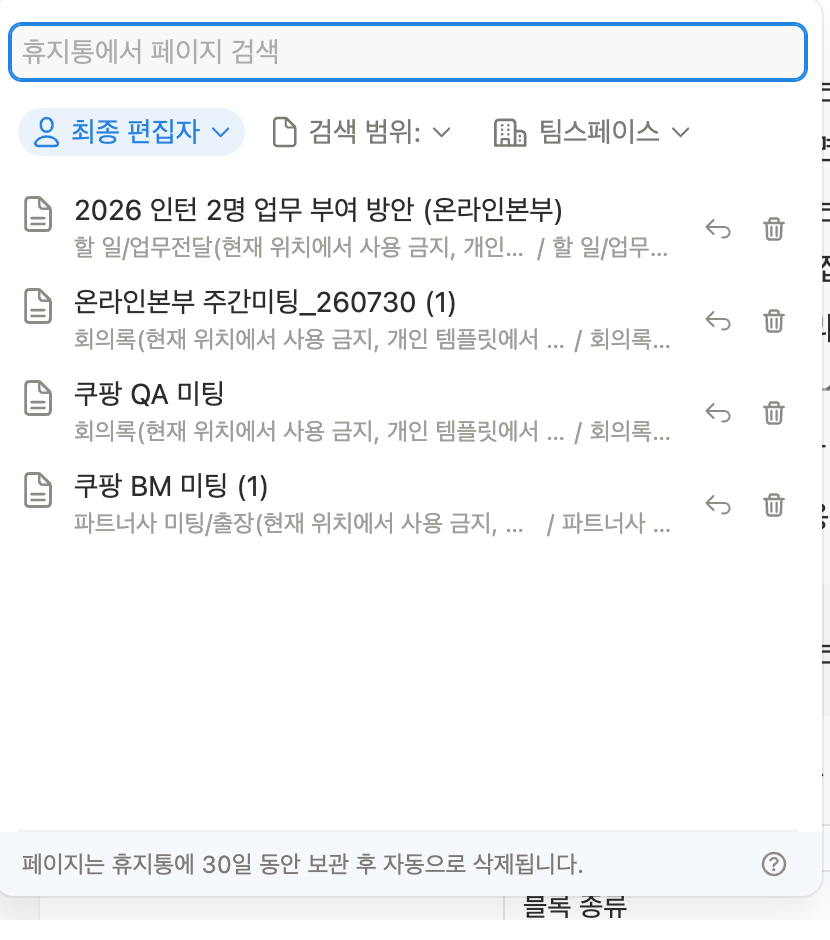
노션에는 저장 버튼이 없습니다. 입력하는 즉시 저장됩니다. 그래서 실수도 즉시 반영됩니다. 되돌리려면 Ctrl + Z, 그보다 오래됐다면 버전 기록을 쓰세요.
링크 복사
상단바의 링크 복사하기를 누르면 그 페이지 주소가 복사됩니다. 구글챗이나 메일에 붙여넣어 공유할 수 있습니다. 단, 상대에게 그 페이지 권한이 있어야 열립니다.
데이터베이스 개념
노션에서 가장 헷갈리는 부분이자, 이해하는 순간 가장 강력해지는 기능입니다. 딱 한 문장만 기억하세요.
데이터베이스는 표처럼 보이지만,
표의 한 줄(행)이 곧 페이지 한 장입니다.
표로 볼 때
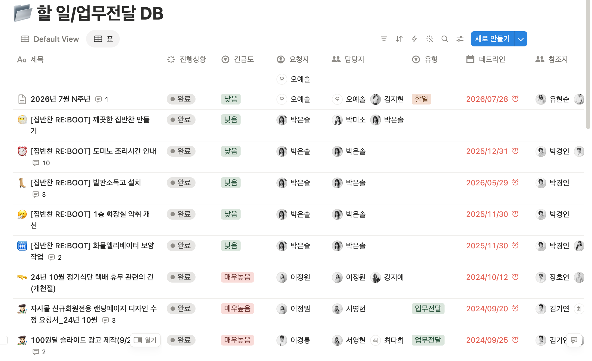
한 줄을 열면 페이지가 열립니다
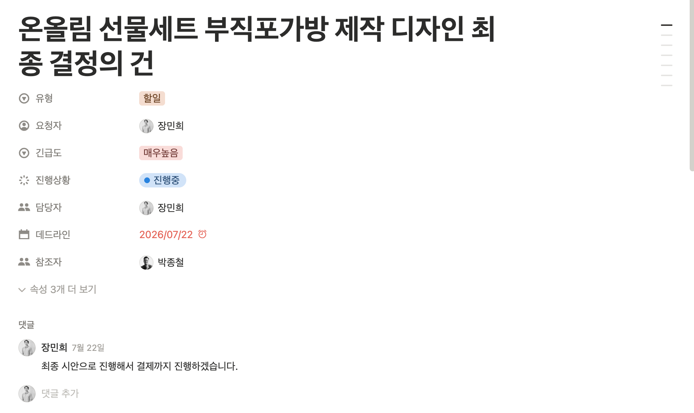
속성 — 표의 각 열
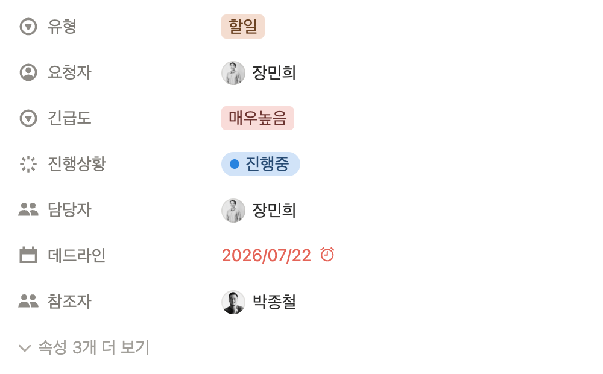
| 속성 종류 | 입력 방식 | 예시 |
|---|---|---|
| 텍스트 | 자유 입력 | 비고, 메모 |
| 선택 | 정해진 값 중 하나 | 진행상황(확인요청 / 진행중 / 완료), 긴급도 |
| 다중 선택 | 여러 개 고르기 | 카테고리, 태그 |
| 사람 | 구성원 검색해서 선택 | 담당자, 요청자, 참조자 |
| 날짜 | 달력에서 선택 | 데드라인, 회의일시 |
| 체크박스 | 켜기 / 끄기 | 완료 여부 |
| 관계형 | 다른 데이터베이스의 페이지를 연결 | 회의록 ↔ 할 일 연결 |
| 파일과 미디어 | 파일 업로드 | 첨부 서류, 이미지 |
뷰 — 같은 데이터를 다른 방식으로 보기
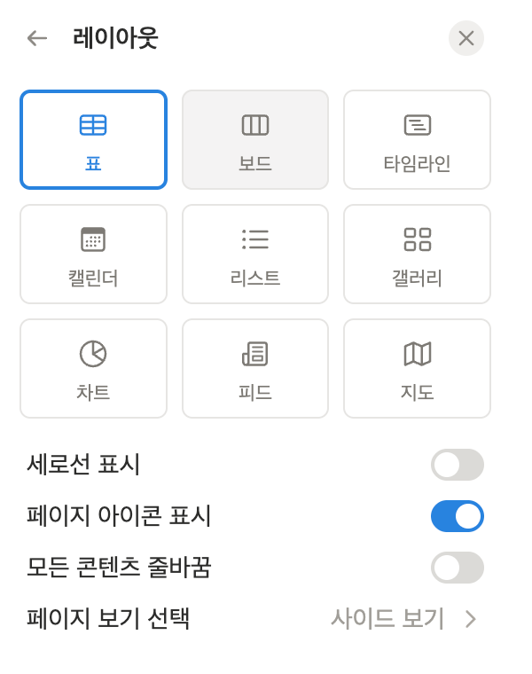
| 뷰 | 어떤 때 편한가 |
|---|---|
| 표 | 모든 값을 한눈에. 가장 기본 |
| 보드 | 진행상황별로 카드가 열을 이룸. 업무 현황 파악에 좋음 |
| 캘린더 | 날짜(데드라인) 기준으로 볼 때 |
| 리스트 | 제목 위주로 단순하게 볼 때 |
| 갤러리 | 이미지가 중요한 경우 (제품, 디자인 시안) |
| 타임라인 | 기간이 있는 일정을 막대로 볼 때 |
뷰를 바꾼다고 데이터가 바뀌지 않습니다. 보여주는 방식만 달라질 뿐, 원본은 하나입니다. 반대로 표에서 값을 고치면 보드·캘린더에도 즉시 반영됩니다.
단순 표 vs 데이터베이스 구분법
단순 표
- 줄을 클릭해도 페이지가 안 열림
- 필터·정렬 버튼이 없음
/표로 만듦- 간단한 비교 정리용
데이터베이스
- 줄을 클릭하면 페이지가 열림
- 위쪽에 필터 · 정렬 · 새로 만들기 버튼이 있음
- 뷰 탭(표/보드/캘린더)이 있음
- 여러 사람이 계속 쌓아가는 업무 기록용
데이터베이스 조작
개념을 알았으면 이제 실제로 다뤄봅니다. 신규 입사자가 가장 먼저 하게 되는 일은 내 것만 골라 보기와 새 항목 등록하기 두 가지입니다.
툴바 읽기
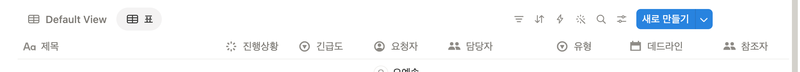
| 버튼 | 하는 일 |
|---|---|
| 필터 | 조건에 맞는 줄만 보이게 걸러냅니다 |
| 정렬 | 순서를 바꿉니다 (마감 임박순 등) |
| 검색 | 이 데이터베이스 안에서만 찾습니다 |
| 설정 (⚙) | 레이아웃 변경, 보이는 속성 선택, 그룹화 |
| 새로 만들기 | 새 항목(=새 페이지)을 추가합니다 |
필터 — 내 것만 보기
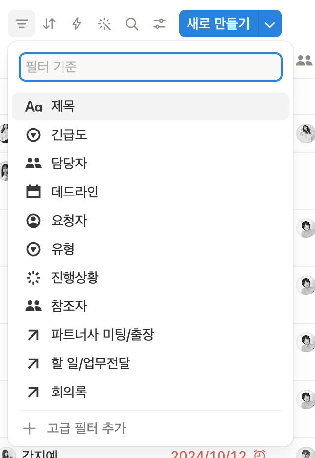
정렬 — 순서 바꾸기
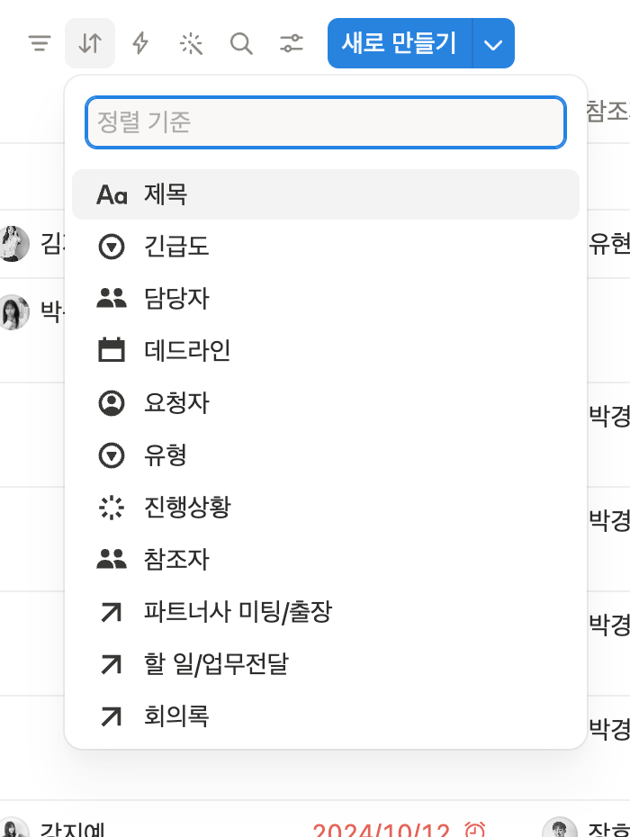
보기 설정
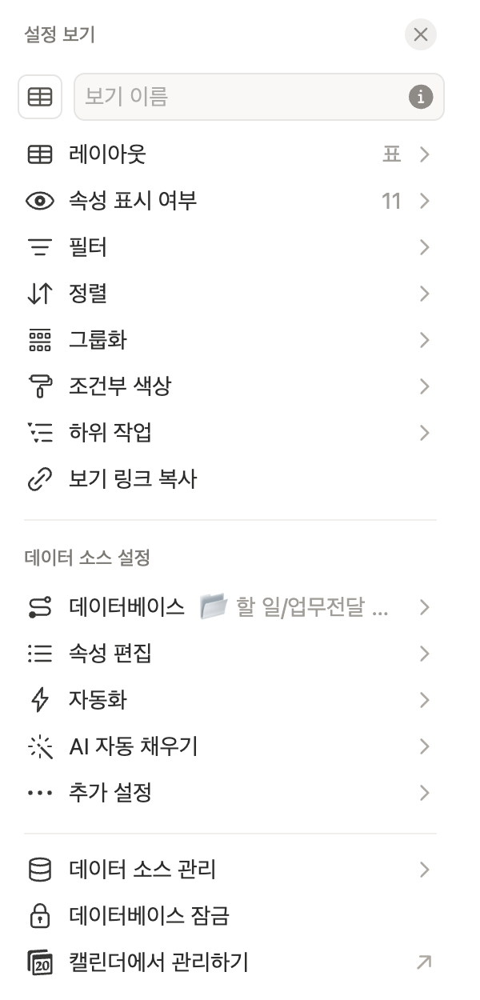
여러 명이 함께 보는 뷰에서 필터를 바꾸면 다른 사람 화면도 같이 바뀝니다. 나만 다르게 보고 싶다면 뷰를 하나 추가해서 쓰거나, 팀에 먼저 확인하세요.
새 항목 등록하기
새로 만들기 버튼 옆의 ▾를 누르면 미리 만들어둔 양식(템플릿) 목록이 나옵니다. 양식이 있는 데이터베이스라면 빈 페이지보다 템플릿으로 시작하는 것이 좋습니다. 필요한 항목이 미리 다 들어 있습니다.
협업 기능
노션은 혼자 쓰는 메모장이 아니라 여러 명이 같은 문서를 동시에 보는 도구입니다. 그래서 상대를 부르는 방법과 의견을 남기는 방법이 정해져 있습니다.
@ — 사람 · 페이지 · 날짜 넣기
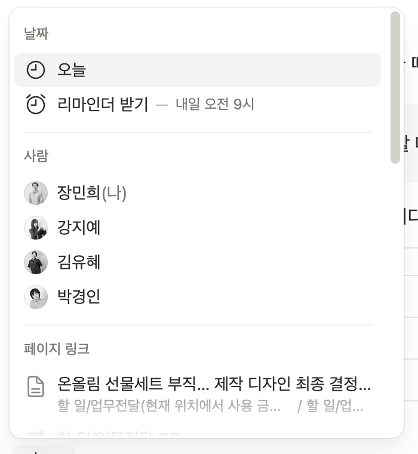
@를 입력하면 나오는 목록입니다. 이어서 이름을 입력하면 좁혀집니다.| 입력 | 결과 |
|---|---|
@ + 사람 이름 | 그 사람이 태그되고 수신함에 알림이 갑니다 |
@ + 페이지 이름 | 다른 문서로 가는 링크가 만들어집니다 |
@ + 날짜 / @오늘 | 날짜가 삽입됩니다 |
사람을 @로 부르면 상대에게 알림이 갑니다. 단순히 이름을 언급하려는 거라면 그냥 글자로 쓰고, 정말 확인이 필요할 때만 멘션하세요.
댓글은 두 종류입니다
페이지 댓글
페이지 제목 아래 댓글 추가에 씁니다. 문서 전체에 대한 의견이나 진행 보고에 적합합니다.
인라인 댓글
본문 중 특정 문장을 선택하고 다는 댓글입니다. 어느 문장에 대한 얘기인지가 분명해집니다.
인라인 댓글 다는 법
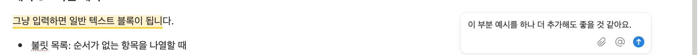
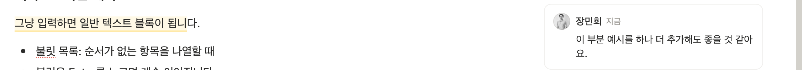
알림 확인 — 수신함
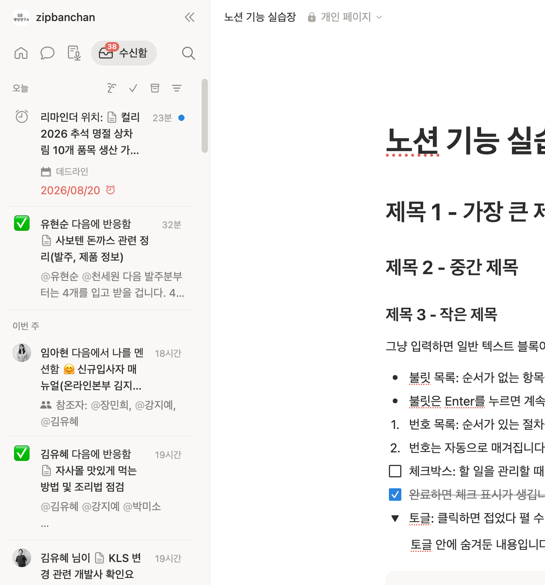
협업 흐름
알림 발송
댓글로 답
공유와 권한
"이 문서를 누가 볼 수 있는가"는 노션에서 아주 중요합니다. 내가 개인 페이지에 쓴 글은 아무도 못 보고, 팀스페이스에 쓴 글은 팀 전체가 봅니다.
공유 창
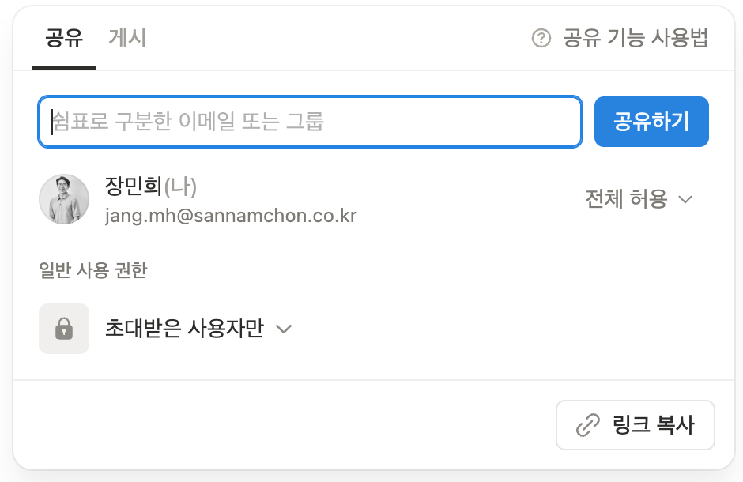
권한 4단계
| 권한 | 할 수 있는 일 |
|---|---|
| 전체 허용 | 내용 편집 + 다른 사람 초대까지 가능 |
| 편집 허용 | 내용을 고칠 수 있음 |
| 댓글 허용 | 읽고 댓글만 가능. 본문은 못 고침 |
| 읽기 허용 | 보기만 가능 |
어디에 문서를 만들어야 하나
팀스페이스에 문서를 만들면 그 순간부터 팀원들에게 계속 알림이 갈 수 있습니다. 정리가 덜 된 초안은 개인 페이지에서 쓰고, 다 되면 옮기는 편이 서로 편합니다.
찾기
문서가 쌓이면 사이드바를 뒤지는 것보다 검색이 훨씬 빠릅니다. 노션을 잘 쓰는 사람은 사실상 검색으로만 이동합니다.
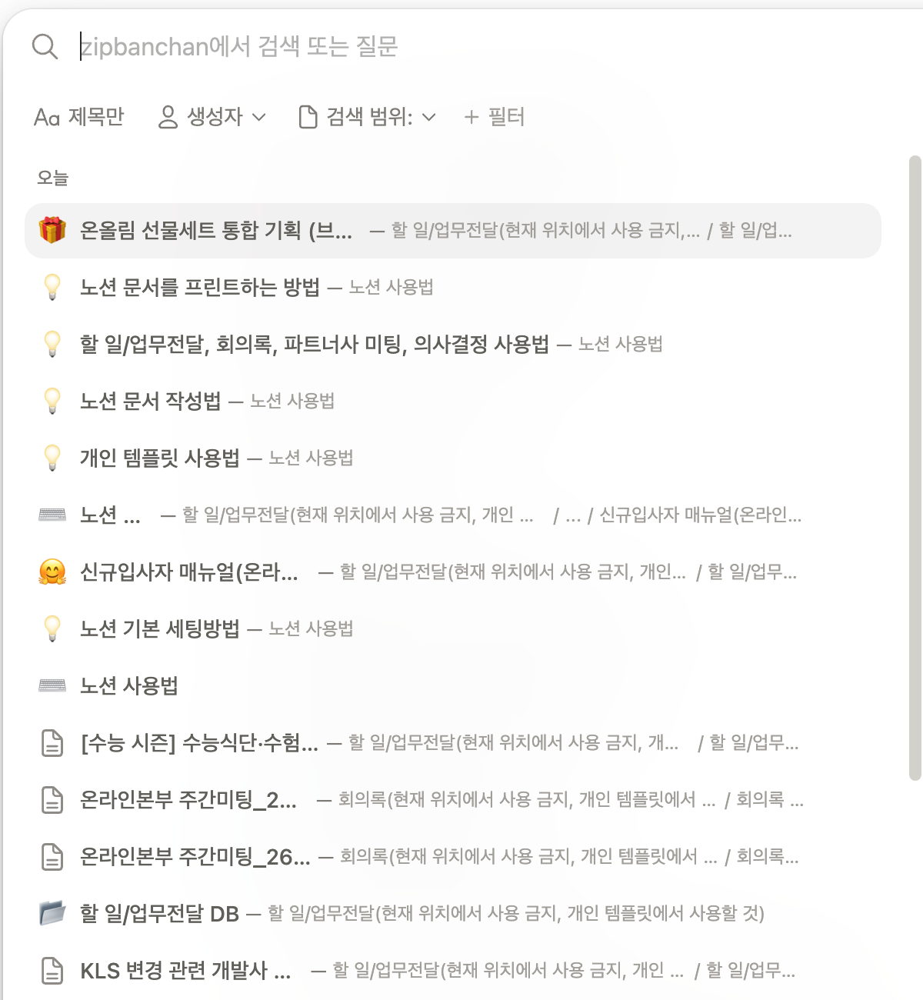
| 방법 | 이럴 때 |
|---|---|
| Ctrl + P | 문서 이름이 대충 기억날 때 (가장 빠름) |
| 사이드바 · 최근 항목 | 조금 전에 보던 문서로 돌아갈 때 |
| 즐겨찾기 | 매일 여는 문서. 상단바 별 아이콘으로 등록 |
| 데이터베이스 안 검색 | 특정 DB 안에서만 찾을 때 |
간혹 브라우저가 Ctrl + P를 인쇄 단축키로 가로채기도 합니다. 그럴 땐 Ctrl + K를 쓰거나 사이드바의 검색을 누르면 됩니다. 단, 글자를 선택한 상태에서 Ctrl + K를 누르면 검색이 아니라 링크 입력이 됩니다.
입사 후 첫 주에 자주 쓰는 문서 5~10개를 즐겨찾기에 등록해두면, 이후 문서를 찾아 헤매는 시간이 크게 줄어듭니다.
내보내기 · 인쇄
회의에 종이로 들고 가거나 외부에 파일로 전달해야 할 때 씁니다.
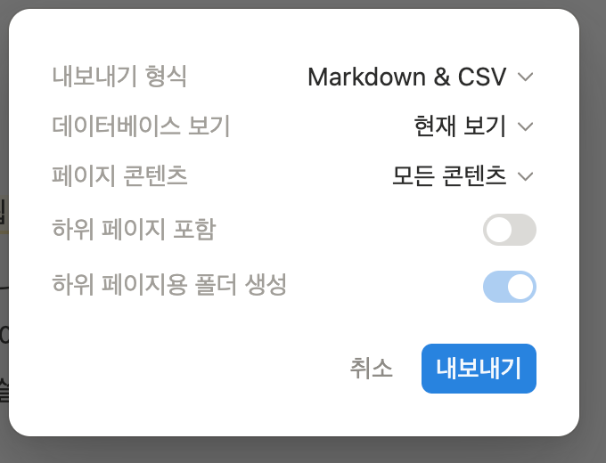
| 형식 | 쓰임 |
|---|---|
| 인쇄용, 외부 전달용. 가장 많이 씁니다 | |
| HTML | 웹페이지 형태로 저장 |
| Markdown & CSV | 다른 도구로 옮길 때. 데이터베이스는 CSV로 나옵니다 |
인쇄가 잘리지 않게 하려면
- 내보내기 형식을 PDF로 지정
- 페이지 형식을 A3로 지정해서 내보내기
- PDF를 열어 인쇄할 때 용지를 A4, 배율을 페이지에 맞춤으로 설정
- 미리보기에서 표가 잘리지 않았는지 확인
노션에 있는 내용은 회사 자산입니다. 업무 목적 외 사용이나 외부 유출이 없도록 하고, 출력한 문서는 사용 후 폐기해 주세요.
단축키 치트시트
전부 외울 필요는 없습니다. 위에서부터 다섯 개만 손에 익혀도 속도가 확 달라집니다.
가장 많이 쓰는 것
| 단축키 | 동작 |
|---|---|
/ | 블록 종류 고르기 (가장 중요) |
| Ctrl + P | 검색 · 페이지 이동 |
| Ctrl + Z | 실행 취소 |
| Ctrl + B | 굵게 |
@ | 사람 · 페이지 · 날짜 넣기 |
글 쓸 때
| 입력 | 결과 |
|---|---|
# ## ### | 제목 1 / 2 / 3 |
- | 불릿 목록 |
1. | 번호 목록 |
[] | 체크박스 |
> | 토글 |
" | 인용 |
| Shift + Enter | 같은 블록 안에서 줄바꿈 |
| Tab / Shift+Tab | 들여쓰기 / 내어쓰기 |
화면 다루기
| 단축키 | 동작 |
|---|---|
| Ctrl + \ | 사이드바 열기 / 닫기 |
| Ctrl + D | 블록 · 페이지 복제 |
| Ctrl + Shift + P | 페이지 옮기기 |
| Esc | 메뉴 닫기 · 블록 선택 해제 |
윈도우와 맥의 차이
노션 화면 구성과 기능은 윈도우와 맥이 똑같습니다. 다른 건 모드키(조합키) 이름과 몇 가지 운영체제 기능뿐입니다.
| 역할 | 윈도우 | 맥 |
|---|---|---|
| 기본 조합키 | Ctrl | ⌘ (Command) |
| 보조 조합키 | Alt | ⌥ (Option) |
| Shift 키 표기 | Shift | ⇧ |
| 이모지 불러오기 (아이콘 입력 시) | Win + . | Ctrl + ⌘ + Space |
| 블록 메뉴 열기 | 둘 다 동일 — 블록 손잡이(⠿) 클릭 또는 마우스 오른쪽 버튼 | |
| 화면 구성 · 메뉴 이름 | 둘 다 동일 — 이 문서의 모든 캡처를 그대로 따라가면 됩니다 | |
이 문서의 캡처는 브라우저에서 열은 노션 화면입니다. 노션은 윈도우 · 맥 · 브라우저 어디서 열든 화면과 메뉴 이름이 동일해서, 윈도우 PC에서도 보이는 모양이 같습니다. 창 모서리의 창 닫기 버튼 모양 정도만 다릅니다.
막혔을 때 Q&A
신규 입사자가 실제로 가장 자주 부딪히는 상황들입니다.
실수로 페이지를 지웠어요
바로 지웠다면 Ctrl + Z로 되돌아옵니다. 시간이 지났다면 사이드바 맨 아래 휴지통에서 찾아 복원하세요. 완전히 사라진 것이 아닙니다.
남의 문서를 실수로 고쳤어요
페이지 메뉴 … → 버전 기록에서 이전 시점을 골라 되돌릴 수 있습니다. 누가 언제 무엇을 바꿨는지도 함께 보입니다. 되돌린 뒤 담당자에게 한마디 남겨두면 더 좋습니다.
표인데 필터 버튼이 없어요
그건 단순 표이고 데이터베이스가 아닙니다. 단순 표는 필터·정렬·뷰 전환이 되지 않습니다. 줄을 클릭했을 때 페이지가 열리는지로 구분하면 가장 확실합니다.
알림이 너무 많이 와요
페이지 메뉴 … → 알림 받기를 꺼서 특정 페이지의 알림을 멈출 수 있습니다. 계정 전체 알림은 설정 → 알림에서 조정합니다. 메일 알림은 꺼두고 노션 안 수신함만 보는 방식을 권합니다.
사이드바에 특정 팀스페이스가 안 보여요
그 팀스페이스에 아직 참여되지 않았거나 권한이 없는 상태입니다. 문서가 사라진 게 아니니 팀장 또는 경영지원HQ에 참여 요청을 하세요.
공유받은 링크를 열었더니 접근 권한이 없다고 나와요
링크는 주소일 뿐, 권한과는 별개입니다. 문서 소유자에게 공유에서 나를 추가해 달라고 요청하세요.
목록에서 빠져나올 수가 없어요
목록 항목에서 Enter를 한 번 더 눌러 빈 항목을 만든 뒤, 다시 Enter를 누르면 일반 문단으로 빠져나옵니다.
저장은 어떻게 하나요
저장 버튼이 없습니다. 입력하는 즉시 자동 저장되고 다른 사람에게도 실시간으로 보입니다. 그래서 완성 전 초안은 개인 페이지에서 쓰는 편이 좋습니다.
직접 해보기
읽기만 하면 손에 남지 않습니다. 개인 페이지에 연습용 페이지를 하나 만들고 아래를 순서대로 해보세요. 아무도 보지 않으니 마음껏 망쳐도 됩니다.
| # | 과제 | 확인 포인트 |
|---|---|---|
| 1 | 개인 페이지에 새 페이지 만들고 아이콘 달기 | 사이드바 개인 페이지 아래에 생겼는지 |
| 2 | 제목 1 · 제목 2 · 제목 3을 하나씩 넣기 | #, ##, ### 로 만들어지는지 |
| 3 | 체크박스 3개를 만들고 1개 체크하기 | [] 로 만들어지는지 |
| 4 | 콜아웃과 토글을 하나씩 넣기 | / 메뉴에서 찾을 수 있는지 |
| 5 | 3열 3행 표를 만들고 값 채우기 | /표 |
| 6 | 블록 하나를 손잡이로 끌어 위치 바꾸기 | ⠿ 를 끌면 움직이는지 |
| 7 | 문장 하나를 선택해 굵게 + 인라인 댓글 달기 | 노란 표시와 오른쪽 댓글이 보이는지 |
| 8 | 본인 이름을 @로 멘션해보기 | 수신함에 알림이 오는지 |
| 9 | 페이지를 즐겨찾기에 등록하기 | 사이드바 즐겨찾기에 뜨는지 |
| 10 | 페이지를 휴지통에 넣었다가 복원하기 | 휴지통에서 되살아나는지 |
| 11 | 회사 데이터베이스에서 담당자 = 나로 필터 걸어보기 | 내 업무만 남는지 |
| 12 | 페이지를 PDF로 내보내기 | … → 내보내기 |
회사에서 노션 때문에 막힐 일은 거의 없습니다. 남은 건 우리 팀이 어떤 문서를 어디에 쌓는지 익히는 것이고, 그건 실제 업무를 하면서 자연스럽게 익혀집니다.